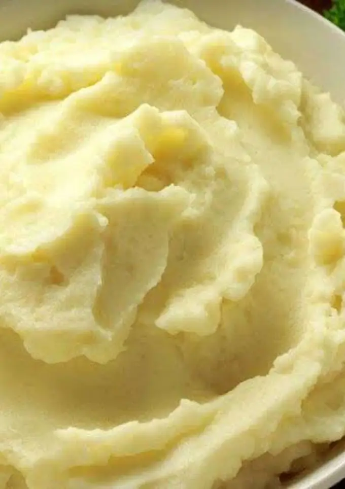

Purê de Batata
Ingredientes
- 8 batatas grandes
- 2 xícaras Água
- 1 xícara Leite
- 1 cabeça de alho
- 100 g manteiga
Instruções de cozinha
- Descascar as batatas e cortar em pedaços grandes
- Quantidades iguais de água e leite até cobrir as batatas
- Tampar e levar em fogo baixo até ficarem macias
- Cortar a parte de cima do alho (oposta à raiz) e temperar com azeite e pimenta, cobrir com alumínio e levar ao forno médio (200°) por meia hora
- Após as batatas cozinharem, coar e amassar
- Adicionar a manteiga
- Adicionar leite aos poucos até dar o ponto
- Retire o alho da casca (apertando mesmo), misture tudo e corrija com uma pitada de sal